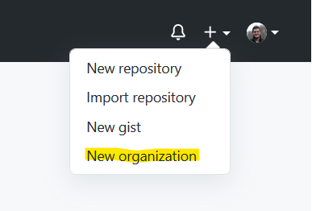
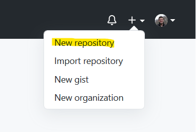
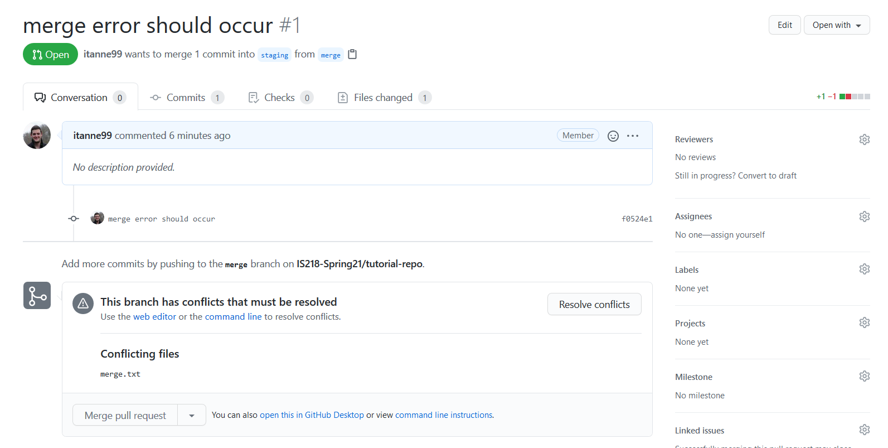

Press the '+' on the navbar in GitHub.
Click on "New organization".
Press “Join for Free”.
Enter information about your organization.
“Organization account name” is the Organization name, which you can enter whatever you like. If there is an error with it (for example an organization with the name exists) it will notify you.
“Contact email” should be the organization email or the person who is setting up the organization.
(Optional) To invite people to the organization you can add their username, profile name, or email address.
Fill out the quick survey about the organization
You’re done! The organization is set up and is ready to have repos made to it.
Press the ‘+’ on the navbar in GitHub.
Press on “New repository”.
Click on section under “Owner” (It will have your username) and change it to your organization.
From there make the repository like you normally would.
By default, there should always be a master and a staging branch. The master will be what the public sees when they access a site and staging branch will be used for local view to test out new features.
A merge conflict will occur when two users are trying to edit the same part of a file. For example both people editing a CSS class.
A merge error will occur when someone who pulled from the staging branch at an earlier date is trying to merge to the staging branch after another branch was merged to it at a later date.
In this example, I merged a newer branch into the staging branch and now the older “merge” branch is having a problem with merging into the “staging” branch due to new changes that it did not expect.
In this tutorial I will also be using Visual Studio Code to fix the merge error.